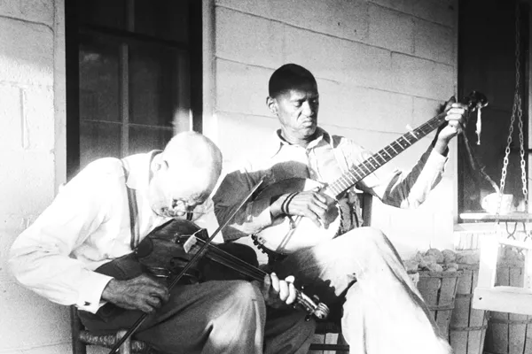

The map below uses recordings from the Alan Lomax Archive to showcase the musical history of the South. Southern-originating styles of music, such as blues, rock and roll, folk, and country, have had an immense influence on global music, and shift throughout time and depending on the region. The majority of these recordings are of black and latinx artists, with many of them being recorded in prisons and farms. Scroll down to the map and move the slider to watch and listen to the evolution of musical styles in the South. This data set is only a small portion of the archive, meant to display a transition throughout time. However, check out the full archive at https://archive.culturalequity.org/

Alan Lomax was a well known ethnomusicologist whose work recording folk songs across the world has been praised by many. His field recordings, a small portion of which are displayed above, span nearly 30 years. The full archive includes thousands of recordings. Many artists, such as Leadbelly, Pete Seeger, and Muddy Waters, credit Lomax with helping to launch their careers. The recordings above help to demonstrate the evolution of musical styles and instruments in the south, with earlier recordings being mainly vocal soloists or hollers, and later recordings even including electric guitar. Lomax stated that one of his goals was "to put sound technology at the disposal of the folk, to bring channels of communication to all sorts of artists and areas."